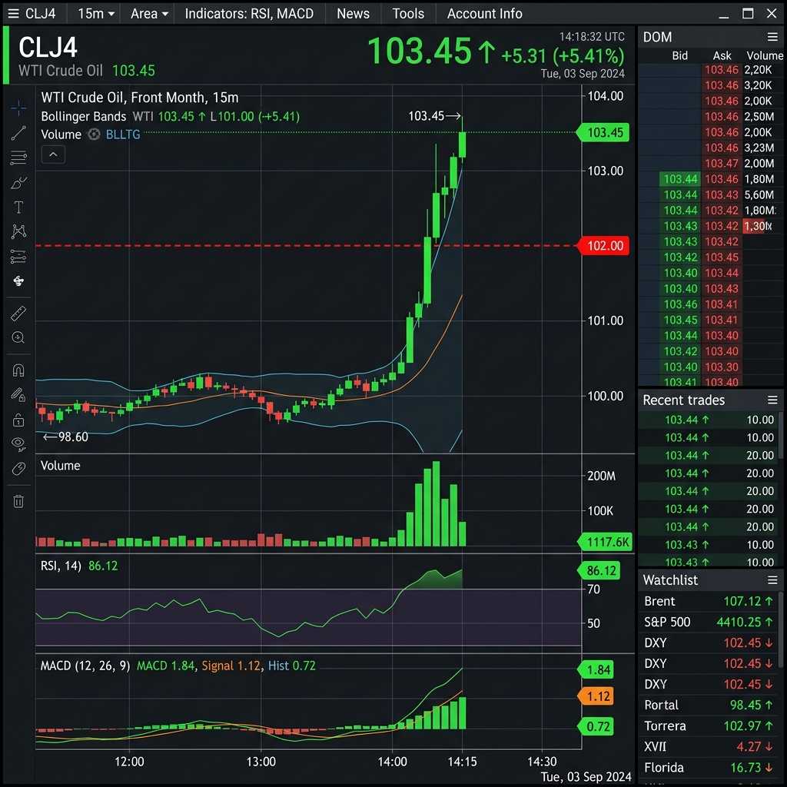
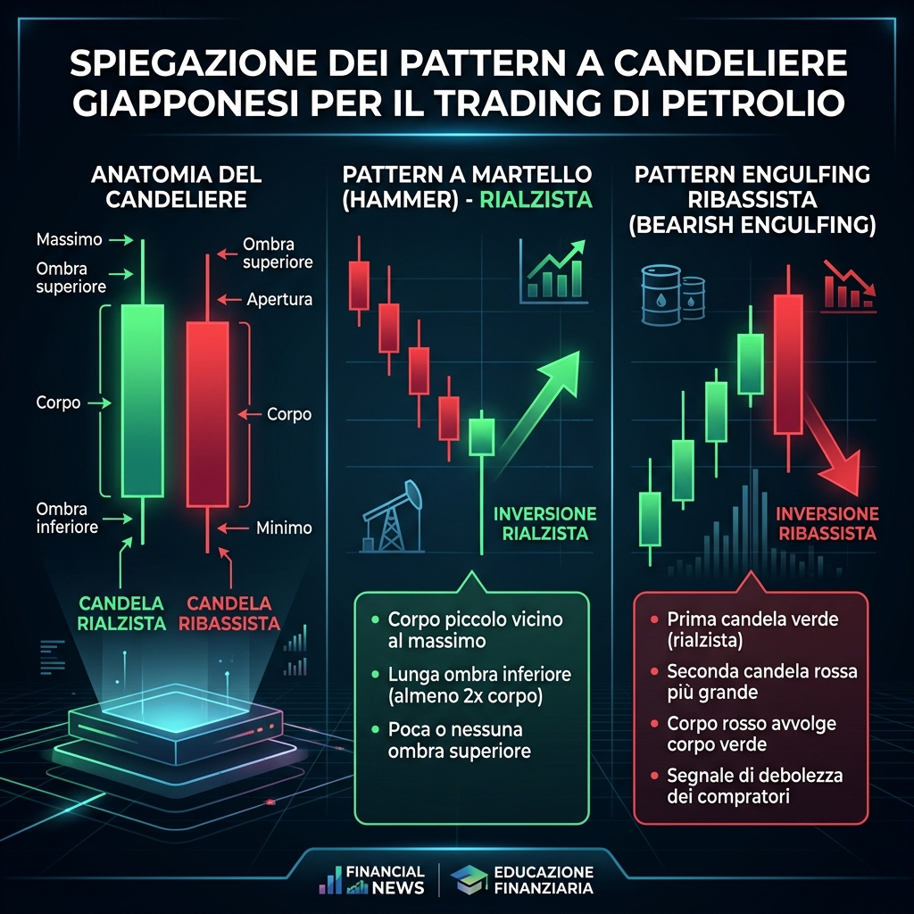
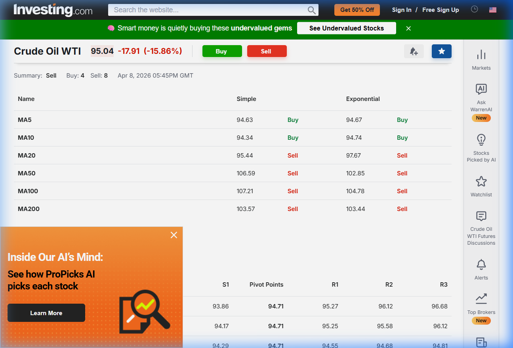
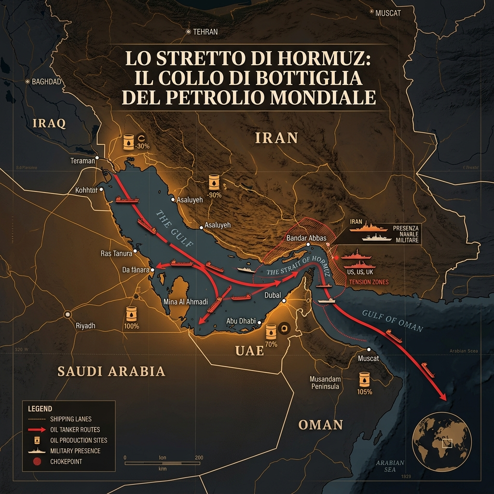
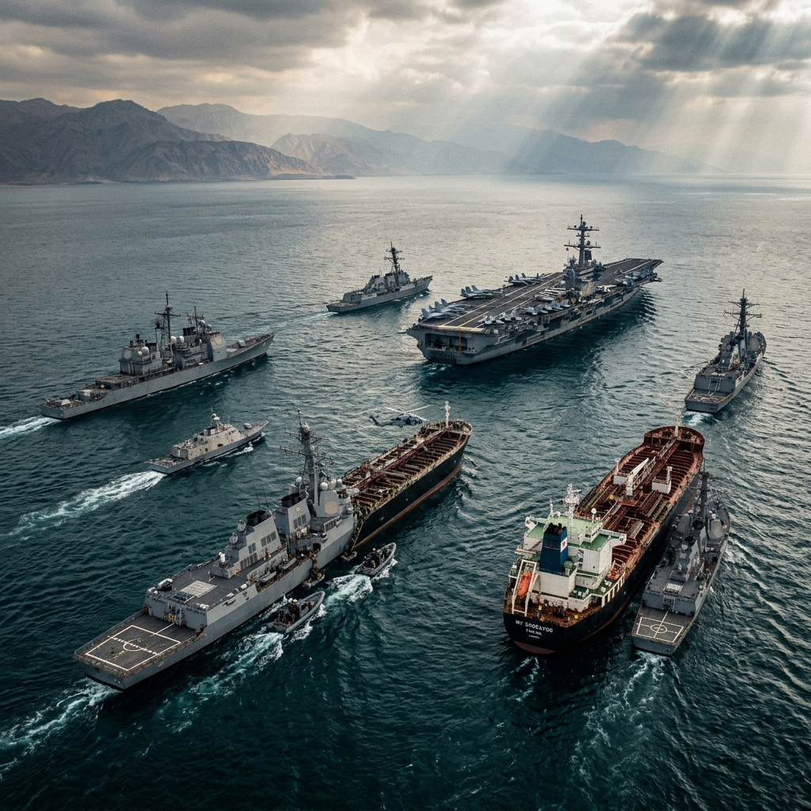

🛢️ PETROLIO WTI OLTRE I $102: FALLISCE LA TREGUA, INIZIA IL BLOCCO NAVALE USA
Analisi tecnica e bollettini di guerra. I dati EIA, le dichiarazioni del CENTCOM e la verità sul mercato (che la propaganda cerca di edulcorare).
Disclaimer
Questo articolo è un'analisi indipendente basata su dati di mercato verificabili. Non costituisce consulenza finanziaria né invito all'investimento. I grafici sono catturati in tempo reale da piattaforme regolamentate (TradingView, Investing.com). I numeri parlano — noi li leggiamo per voi.
📊 Il Quadro Generale: La "Bull Trap" e la Reality Check del 13 Aprile
Solamente la scorsa settimana documentavamo il crollo violento del WTI fino a quota $95,02 e le speculazioni su una presunta tregua in Medio Oriente. Molti opinionisti della domenica avevano già dichiarato finita la crisi energetica. Oggi, 13 aprile 2026, la realtà presenta il conto.
Il petrolio WTI (West Texas Intermediate) ha invertito completamente la tendenza, cancellando il sell-off dei giorni precedenti. Al momento della stesura, i contratti scambiano a un range infuocato tra i $102,00 e i $103,60 al barile (con il Brent ampiamente sopra quota $100/+7% giornaliero).
Non stiamo parlando di normali fluttuazioni, ma di una reazione diretta a uno dei più drastici mutamenti macro-geopolitici dell'inizio del decennio globale: il fischio d'inizio del Blocco Navale Americano. Cosa ci dicono davvero i terminali e i veri player del settore?
🕯️ Il Grafico a Candele: La Verità Nuda e Cruda
Partiamo dal grafico reale, catturato direttamente da TradingView questo pomeriggio:

Cosa vediamo nel grafico?
Se osserviamo l'andamento recente dei grafici a candele giapponesi (timeframe giornaliero, 1D), notiamo una struttura profondamente instabile:
- Il finto crollo (8 aprile): La violenta "Bearish Marubozu" che ha spinto i prezzi sotto i $95 la settimana scorsa è stata il risultato del panico da disinvestimento. Un violento "scarico" causato dalle voci (rivelatesi fallaci) della trattativa tra la diplomazia USA e l'Iran.
- La ri-esplosione odierna: Oggi stiamo assistendo all'immediata risposta dei compratori (e coperture degli short-seller) che stanno guidando la curva ai ridosso delle resistenze strutturali. Questo rapido assorbimento tecnico conferma che i fondamentali mondiali dell'offerta non sono stati risolti dalle parole, riaccendendo l'ansia sul mercato dei futures.

📈 L'Analisi Tecnica: I Numeri Non Hanno Opinione Politica
Meno chiacchiere e più razionalità. Ecco i dati tecnici catturati da Investing.com:

| Indicatore | Valore | Segnale |
|---|---|---|
| RSI (14) | 35,26 | ⚠️ Vicino all'ipervenduto |
| MACD (12,26) | -3,60 | 🔴 Vendita |
| Sintesi Media | - | SELL (Buy: 4 — Sell: 8) |
Il prezzo si muove in una fascia vitale tra il supporto di $93,86 e la resistenza di $95,27. Il prezzo attuale è "scivolato" sotto quasi tutte le principali medie mobili degli ultimi mesi (MA20, MA50, MA100).
🌍 L'Analisi Geopolitica: Il Fallimento di Islamabad e il Blocco CENTCOM

L'illusione di una de-escalation è morta questo fine settimana. I report internazionali, spesso filtrati o minimizzati dai media generalisti europei, indicano chiaramente che i negoziati segreti tenutisi a Islamabad tra emissari della Casa Bianca e l'establishment iraniano sono totalmente collassati. Le richieste di Teheran sull'alleggerimento delle sanzioni bancarie SWIFT sono state respinte in blocco dalla presidenza Trump, che ha scelto la linea dura.
⚓ L'Operazione "Iron Wake" e i Dati CENTCOM
Alle ore 10:00 ET di domenica, il Comando Centrale degli Stati Uniti (CENTCOM) ha ufficialmente dispiegato il Carrier Strike Group della USS Gerald R. Ford nell'area del Golfo Persico, avviando un blocco navale mirato (Operazione "Iron Wake") sui principali terminal d'esportazione iraniani, tra cui l'isola di Kharg e Bandar Abbas. L'obiettivo tattico è paralizzare il contrabbando "ghost fleet" (la flotta fantasma) che sfugge all'embargo. Come riportato da dispacci indipendenti (confermati da indagini Bloomberg e Reuters The Terminal), la Marina USA sta intercettando VLCC (Very Large Crude Carriers) sospette, imponendo un fermo operativo immediato.
📈 Il Report EIA di Washington: Shock dell'Offerta
Cosa significa questo per i prezzi? Affidiamoci ai dati incontrovertibili. L'ultimo report speciale della Energy Information Administration (EIA) di Washington ha appena rivisto al rialzo tutte le proiezioni per il secondo semestre 2026. L'EIA stima che l'attuale escalation di tensione genererà shut-ins logistici (blocchi e deviazioni obbligate della catena di approvvigionamento) capaci di congelare fino a 9,1 milioni di barili al giorno in transito potenziale. Si crea uno squilibrio critico tra domanda globale e offerta.
I modelli quantitativi americani proiettano un rischio matematico che il Brent superi quota $115/barile entro le prossime settimane, trascinando il WTI saldamente sopra l'area dei $108-$110 qualora i paesi OPEC+ non immettano immediatamente sul mercato tutta la loro spare capacity (capacità di riserva estraibile in breve tempo).

🛑 DEBUNKING ROOM: Smontiamo la Propaganda da Bar sulla Benzina
Con il WTI che ha fatto un giro sulle montagne russe — crollando a $95 e rimbalzando prepotentemente oggi oltre i $102 — si è accesa una spietata campagna di disinformazione. Prima la lamentela da bar era: "Il petrolio scende in Borsa a $95, ma alla pompa la benzina resta cara! Speculatori!" Oggi, all'inverso, le opposizioni gridano: "Il greggio schizza a $103, il governo affosserà gli automobilisti alzando tutto domani!"
Fermiamoci un secondo a ripristinare la logica economica e smontiamo l'ignoranza finanziaria con il nostro consueto fact-checking tecnico.
❌ FAKE NEWS: "Il petrolio crolla o sale oggi, il prezzo della benzina deve seguire domani."
Falso. Il mercato ignora l'esistenza matematica del "Market Lag" logistico.
Le stazioni di litri alla pompa che voi erogate oggi sono state comprate, trasportate su gomma e intermediate settimane fa dalle raffinerie (non al terminale di Wall Street stamattina). C'è un'inerzia intrinseca (lag) tra i contratti future della Borsa sul greggio (WTI/Brent) e il calo/aumento retail ai distributori. Chi parla di variazioni dei prezzi al consumo "in tempo reale" rispetto alla giornata di borsa semplicemente non sa di che cosa sta parlando.
❌ FAKE NEWS: "Le accise sono una tassa per fare cassa immediata dal caro-benzina."
Falso. È una necessità strutturale sul debito che l'attuale esecutivo ereda.
In Italia, più del 50% del costo finale è bloccato dalle zavorre fiscali fisse nate nei decenni pregressi (le "famose" accise di scopo). Ridurle indiscriminatamente e senza coperture come vorrebbe la demagogia di sinistra creerebbe immediatamente un cratere nel bilancio dello Stato ed una sanzione contabile dall'UE. I prezzi alti attuali dipendono dal salto dei dazi crudi non da nuove pressioni fiscali, che anzi l'attuale esecutivo Meloni sta tentando coraggiosamente di calmierare con misure strutturali chirurgiche senza compromettere il bilancio nazionale.
✅ FATTO CERTIFICATO: Anche la valuta conta. Attenti a EURO/DOLLARO e "Crack Spread"
Il grande pubblico dimentica sempre che il barile WTI si paga in Petrodollari. Nei momenti di grande panico geopolitico come il Blocco CENTCOM, gli investitori mondiali corrono a comprare Dollari (come asset rifugio). Se l'Euro si deprezza nei confronti del Dollaro, gran parte della stabilità del carburante evaporerà bruciata nel cambio svantaggioso per le importazioni europee. Inoltre i costi di raffinazione (il Crack Spread, che varia diversamente dal greggio grezzo) stanno subendo lo scossone tecnico. Ecco l'economia vera.
🇮🇹 L'Azione Pragmatica del Governo: Le Alternative ad Hormuz
Proprio per slegare l'Italia dal rischio estremo legato a specifici colli di bottiglia e pressioni estere, Giorgia Meloni si è recentemente mossa in prima persona con missioni chiave nei Paesi del Golfo (Arabia Saudita, Emirati Arabi, Qatar). Una diplomazia seria, volta a garantire vie di approvvigionamento solide e fonti energetiche diversificate per il lungo termine.
In sinergia con la robusta visione del Piano Mattei e gli strategici accordi rinnovati per l'acquisizione del gas algerino, l'attuale governo di Centro-Destra sta dimostrando che le crisi globali non si affrontano piangendosi addosso, ma creando reti di stabilità e sicurezza energetica a tutela della nazione e della nostra industria.
📝 Conclusione
Viviamo un'epoca in cui la finanza e l'economia si sono trasformati in un campo di battaglia della narrazione: c'è chi urla al disastro per fare propaganda e chi minimizza tutto mentendo. Noi crediamo solo nei dati veri e nelle meccaniche dell'economia reale. Da noi non troverete gli urlatori qualunquisti.
Continuate a seguirci per ragionare con la vostra testa.